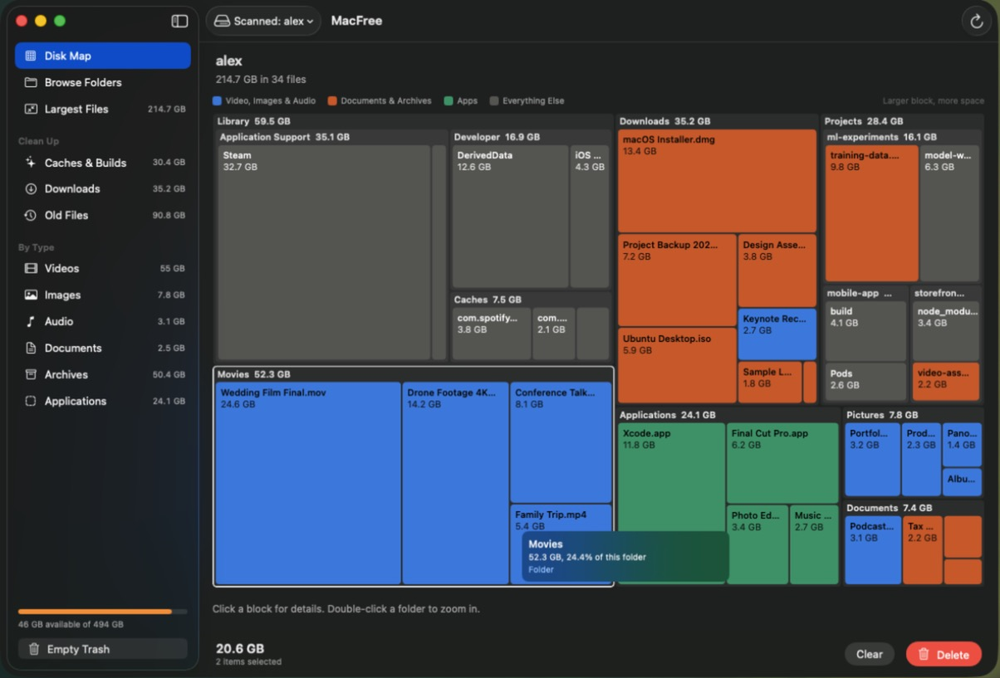
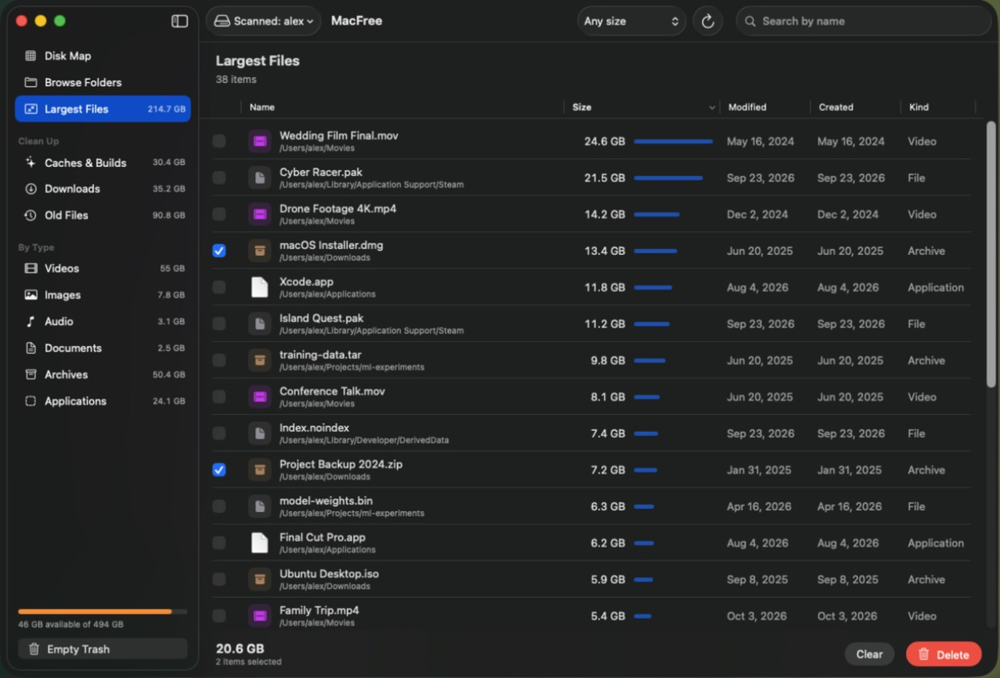

MacFree maps your disk so the biggest files stand out, then lets you clear them in a few clicks. Free and open source.
Download for MacFree. Requires macOS 14 or later.

Screenshots use sample files.
Sort by size or date, or jump to caches, old files and downloads. Tick what you don't need and the running total shows how much you'll get back.

System files and folders your Mac depends on are locked, and every delete asks you first.
Move items to the Trash and undo it, or delete them permanently to get the space back right away.
MacFree scans on your Mac. It has no account, and iCloud files aren't downloaded during a scan.